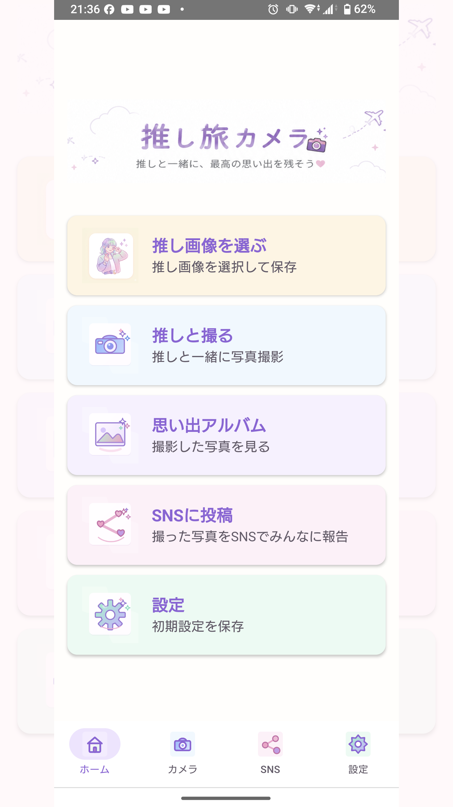
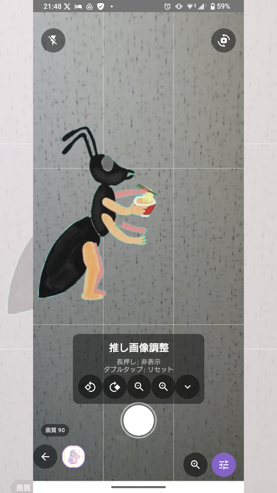
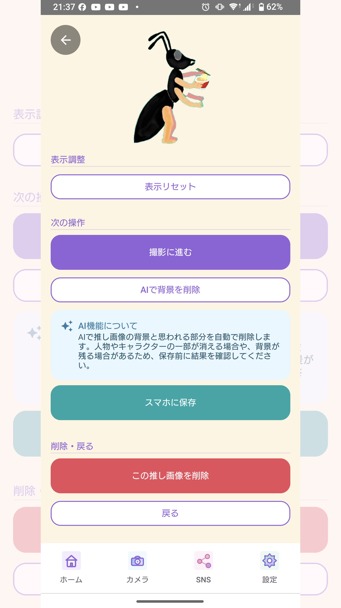
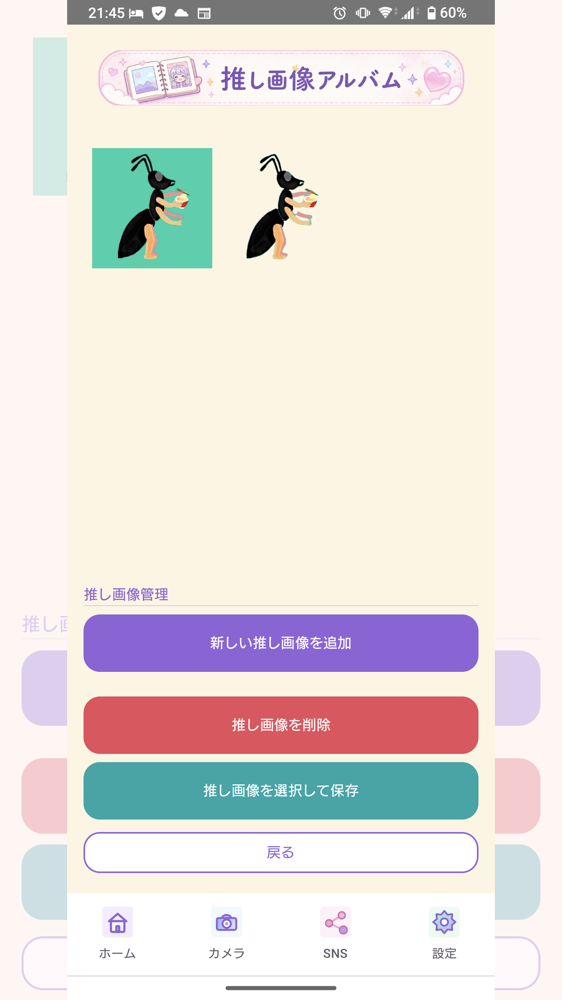
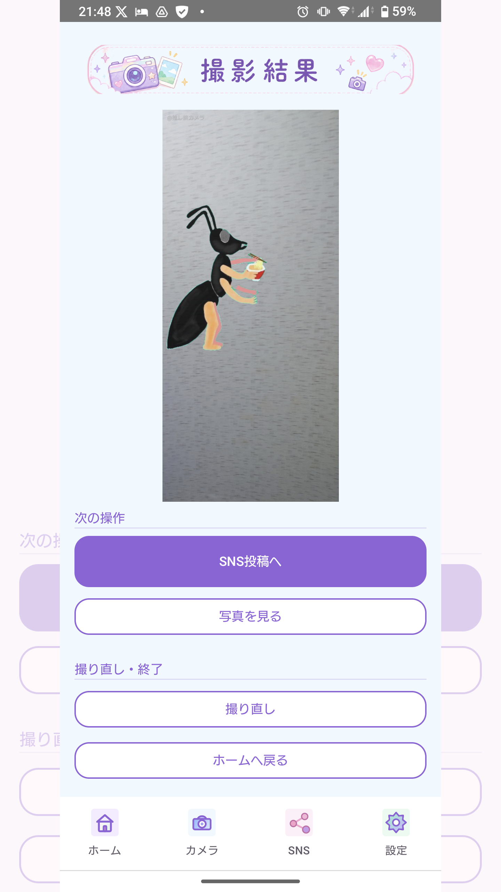
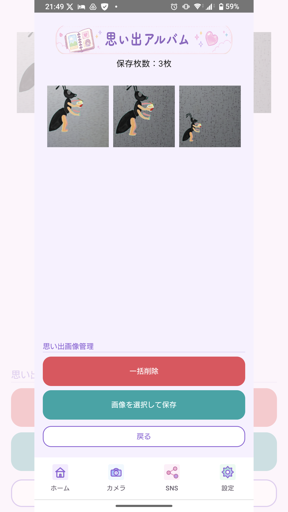
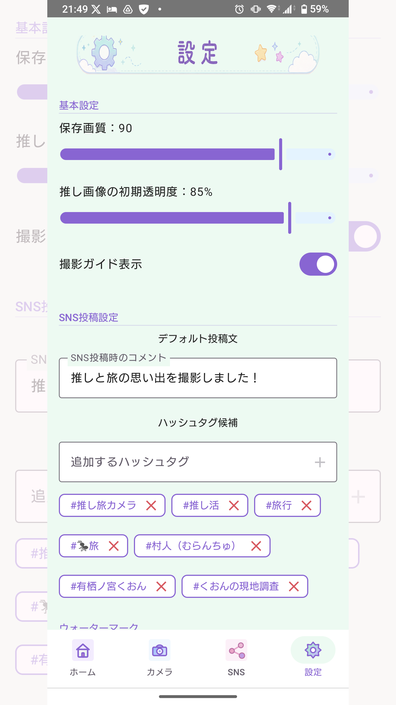

推し旅カメラ v1.5 かんたん取扱説明書
作成日: 2026年5月27日
この説明書は、Androidアプリ「推し旅カメラ」v1.5 の基本的な使い方をまとめたものです。内部テストの結果に合わせて、公開前に内容を見直します。
画面イメージ
推しとの思い出づくりを楽しく進められるように、やわらかい色合いとイラスト付きの画面で構成しています。



1. アプリの目的
推し旅カメラは、「推しと旅して思い出を残す」「推しが旅して思い出を登録する」をテーマにしたカメラアプリです。
推し画像を写真に重ねて撮影し、旅先や日常の思い出を作り、SNS投稿前の確認まで行いやすくすることを目的にしています。
2. 主な画面
- ホーム: 主要機能へ移動する画面です。
- 推し画像アルバム: アプリ内に保存した推し画像を管理します。
- 推し画像を選ぶ: スマホフォルダから推し画像を選び、追加や撮影へ進めます。
- カメラ: 推し画像を重ねて写真を撮影します。
- 撮影結果: 撮影した画像を確認し、SNS投稿や保存へ進めます。
- 思い出アルバム: 撮影・合成した画像を管理します。
- SNSに投稿: 投稿用画像、コメント、ハッシュタグ、ウォーターマークを確認します。
- 設定: 保存画質、透明度、投稿文、ハッシュタグ候補、ウォーターマーク候補などを設定します。
3. 推し画像を追加する

- ホーム画面で「推し画像を選ぶ」を押します。
- 「スマホフォルダ参照」を押します。
- 追加したい画像を選びます。
- 「推し画像に追加」を押すと、推し画像アルバムに保存されます。
- そのまま撮影したい場合は「撮影に進む」を押します。
推し画像として取り込んだ画像は、元のスマホフォルダ内の画像とは別に、アプリ内へコピーして保存されます。
4. AI背景削除を使う
- 推し画像アルバムで画像を選びます。
- 確認画面で「AIで背景を削除」を押します。
- 結果を確認します。
- 「新しい推し画像として保存」または「元の画像を上書き」を選びます。
AI背景削除は端末内で処理されます。人物やキャラクターの一部が消える場合や、背景が残る場合があります。保存前に必ず結果を確認してください。
5. 推し画像を重ねて撮影する
- ホーム画面で「推しと撮る」を押します。
- 必要に応じて推し画像を選びます。
- カメラ画面で推し画像の位置や大きさを調整します。
- 推し画像調整パネルで、回転や透明度を調整します。
- シャッターボタンを押して撮影します。
カメラ画面では、推し画像をドラッグして移動できます。ピンチ操作で大きさを変更できます。拡大しすぎた場合は、縮小ボタンや表示リセットを使って調整してください。
6. 撮影結果を確認する

撮影後は、撮影結果画面で画像を確認できます。
- 「SNS投稿へ」: SNS投稿画面へ進みます。
- 「写真を見る」: 画像確認画面で大きく確認します。
- 「撮り直し」: カメラへ戻って再撮影します。
- 「ホームへ戻る」: ホーム画面へ戻ります。
撮影した画像には、加工した画像であることを示すため、固定ウォーターマーク「@推し旅カメラ」が入ります。
7. 思い出アルバムを使う

思い出アルバムでは、撮影・合成した画像を確認できます。
- 画像を押すと確認画面を開けます。
- 画像確認画面からスマホへ保存できます。
- 一括削除や選択保存を行えます。
- 削除操作は元に戻せない場合があるため、必要な画像は先にスマホへ保存してください。
8. SNS投稿を準備する
- ホーム画面で「SNSに投稿」を押します。
- 思い出アルバムまたはスマホフォルダから投稿画像を選びます。
- 必要に応じて画像を回転します。
- 「画像を確認」で投稿前の画像を確認します。
- 「人物写り込みチェック」で、人物や影の候補を確認します。
- コメント、ハッシュタグ、ウォーターマークを設定します。
- 著作権注意文を確認します。
- 「SNSにシェア」を押して共有先を選びます。
人物写り込みチェックは補助機能です。暗い場所、小さい人物、反射、影、顔が見えない人物などは検出できない場合があります。投稿前には必ず画像全体を目視で確認してください。
9. 設定画面でできること

- 保存画質
- 推し画像の初期透明度
- 撮影ガイド表示
- SNS投稿時のデフォルト投稿文
- ハッシュタグ候補
- SNS投稿時のウォーターマーク設定
- ウォーターマーク候補
- ウォーターマーク文字サイズ
- ウォーターマーク文字色
プライバシーポリシー、利用規約、バージョン、キャッシュ削除も設定画面から確認できます。
10. スマホに保存する
推し画像や思い出画像は、アプリ内に保存されます。スマホの写真フォルダなどへ出したい場合は、「スマホに保存」または「画像を選択して保存」を使います。
スマホへ保存した画像は、アプリを削除しても端末側に残る場合があります。不要な画像は端末の写真アプリなどから削除してください。
11. 著作権・肖像権・SNS規約の注意
アニメ、キャラクター、写真、ロゴ、施設、イベント、人物などには、著作権、肖像権、商標権、施設やイベントの撮影ルール、公式ガイドラインが関係する場合があります。
本アプリの注意表示や人物写り込みチェックは、投稿前の確認を補助するためのものです。投稿してよい内容かどうか、公開してよい範囲かどうかは、ユーザー自身で最終確認してください。
12. 困ったとき
- カメラが使えない場合は、端末の設定でカメラ権限が許可されているか確認してください。
- 画像が見つからない場合は、アプリ内の思い出アルバム、またはスマホへ保存した写真フォルダを確認してください。
- AI背景削除や人物写り込みチェックがうまくいかない場合は、結果を目視で確認し、必要に応じて別の画像で試してください。
- SNS投稿ができない場合は、共有先のSNSアプリがインストールされているか、ログイン状態かを確認してください。
13. お問い合わせ
- 運営者名: 黒い蟻プロジェクト
- 連絡先: kuroiari@mbr.nifty.com
- 補助連絡先: X @kuroiari